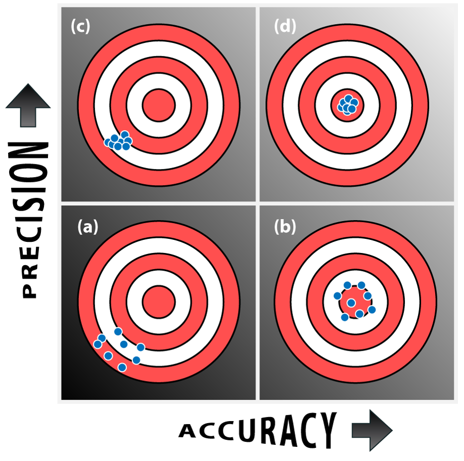
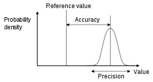

DartFigure-Accuracy-Precision #Demo


import random
import turtle
wn = turtle.Screen()
alex = turtle.Turtle()
alex.speed(0)
interval = 30 # the interval between neighboring rings in pixels
ringNum = 10
alex.hideturtle()
for i in range(ringNum,0,-1):
alex.penup()
alex.goto(0,-1*interval*i)
alex.pendown()
if i % 2 == 1:
alex.fillcolor('red')
else:
alex.fillcolor('white')
alex.begin_fill()
alex.circle(interval*i)
alex.write(i)
alex.end_fill()
#### throw darts
xlist = []
ylist = []
wn = turtle.Screen()
wd = turtle.Turtle()
wd.shape("classic")
wd.color("green")
wd.penup()
# mux and muy are the mean value of 2D darts --- accuracy
# sigmax and sigmay are the deviation of the darts -- precision
mux = 100
sigmax = 50
muy = 0
sigmay = 50
dartsNum = 10 # the number of darts on the figure
for i in range(dartsNum):
xlist.append(random.normalvariate(mux, sigmax))
ylist.append(random.normalvariate(muy, sigmay))
wd.goto(xlist[i], ylist[i])
wd.stamp()
wn.mainloop()